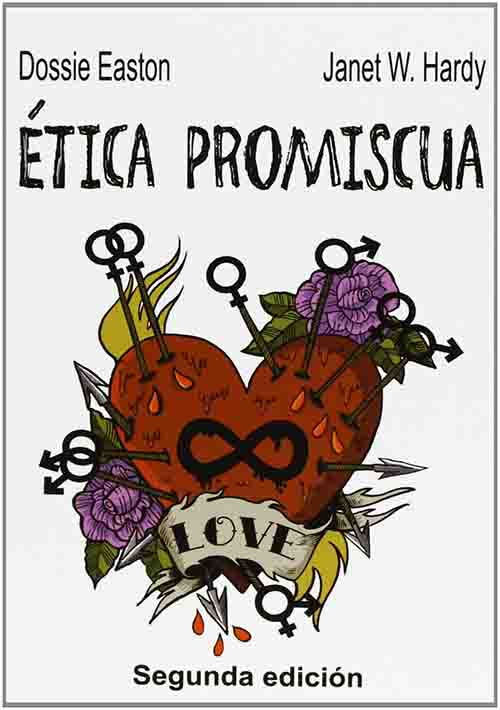
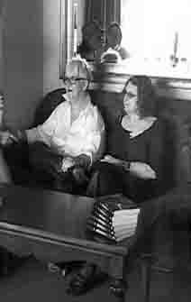

Dossie Easton y Janet W. Hardy:
Ética promiscua
Dossie Easton junto con Janet W. Hardy son coautoras del libro The Ethical Slut: a Guide to Infinite Sexual Possibilities, traducida al español bajo el título "Ética promiscua". Lo que puede ser interesante del libro no es si pretende servir como un manual para quienes desean incursionar en el mundo del amor libre, el poliamor y las relaciones abiertas, sino que permite dar un vistazo a esas prácticas que los libros académicos pasan por alto.
Las autoras, que no son profesionales de la medicina ni de las ciencias sociales, afirman hablar por experiencia propia, lo cual puede ser cierto o no, pero brindan una una exposición interesante y creíble sobre alternativas a la monogamia que deja insatisfechas a muchas personas. En ese sentido, podría considerarse un complemento del libro de Chistopher Ryan & Casilda Jethá que se presenta después y sí tiene pretenciones científicas.